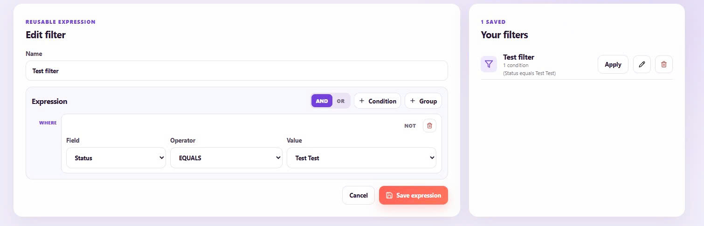
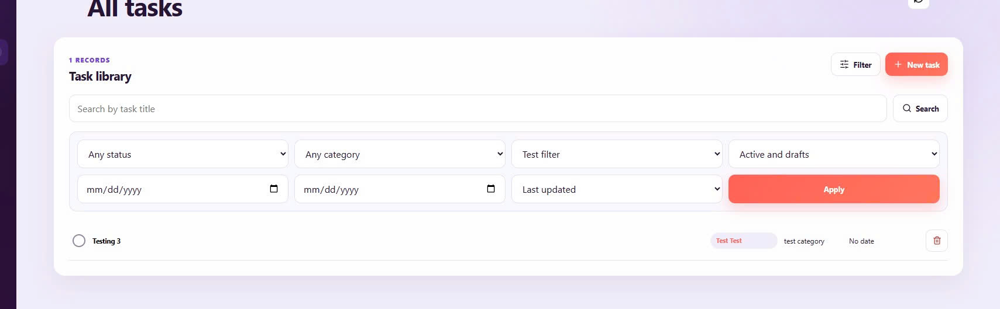
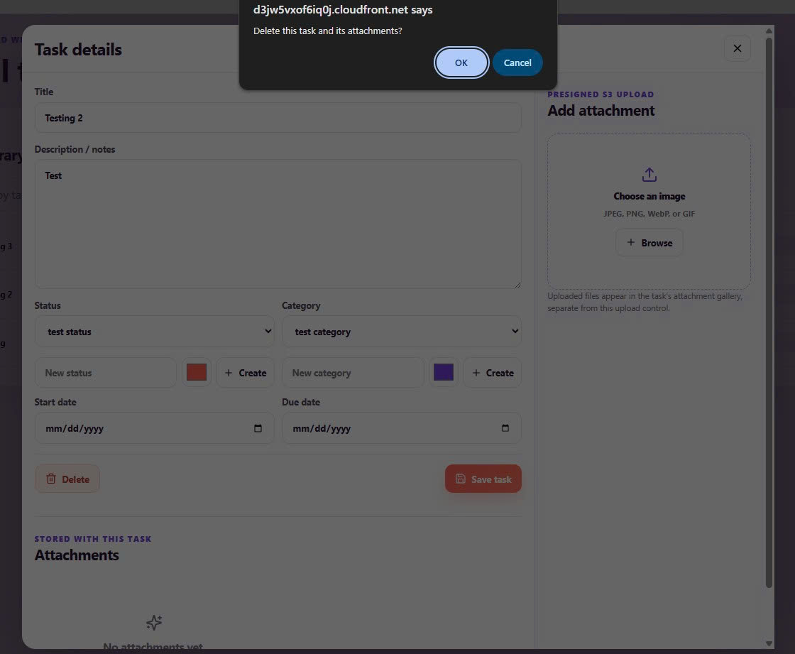

Kiểm thử Giám sát & Ghi log trên Amazon CloudWatch
Trong phần này, chúng ta tiến hành kiểm thử khả năng vận hành và giám sát hệ thống Serverless thông qua Amazon CloudWatch, bao gồm CloudWatch Logs và CloudWatch Metrics / Alarms.
1. Kiểm thử Luồng Ghi vết Log trên CloudWatch Logs
-
Các bước thực hiện:
- Truy cập Amazon CloudWatch Console -> Chọn Log groups.
- Chọn Log Group tương ứng với Lambda function và mở Log Stream mới nhất.
-
Kết quả kỳ vọng:
- CloudWatch ghi nhận đầy đủ luồng thực thi:
START RequestId, REPORT Duration, Billed Duration, Memory Size.

2. Kiểm tra Biểu đồ Chỉ số Hiệu năng (CloudWatch Metrics)
-
Các bước thực hiện:
- Vào CloudWatch Console -> Metrics -> chọn namespace Lambda / API Gateway.
- Quan sát các chỉ số real-time: Invocations, Duration, Error Count.
-
Kết quả kỳ vọng:
- Biểu đồ hiển thị trực quan lưu lượng truy cập hệ thống với tỷ lệ thành công 100%.

3. Kiểm tra Cảnh báo Cước phí (CloudWatch Billing Alarm)
-
Các bước thực hiện:
- Vào CloudWatch Console -> Alarms.
- Kiểm tra trạng thái của Alarm giám sát cước phí ngưỡng $1.00 USD.
-
Kết quả kỳ vọng:
- Alarm duy trì ở trạng thái
OK.
